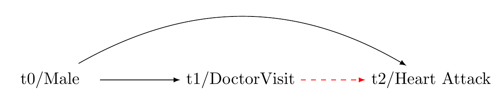
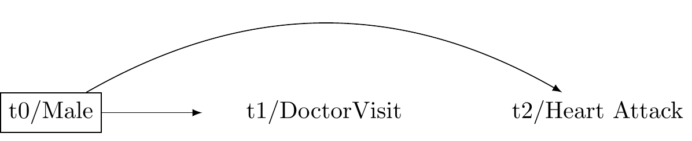
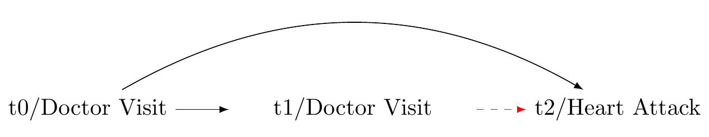
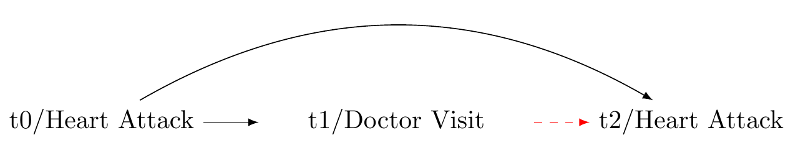
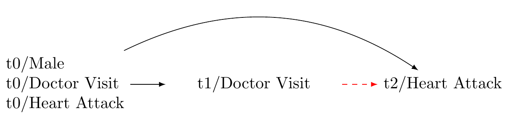
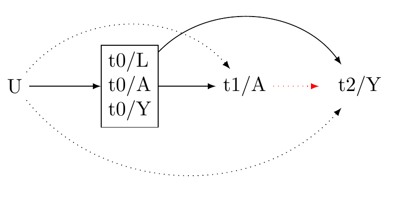

Motivate Three Wave Longitudinal Designs Using Causal Graphs
Checklist For Causal Estimation in Three Wave Longitudinal Designs
Explanation of the the Checklist
Motivations for a Three-Wave Longitudinal Design for Observational Causal Inference.
REVIEW: Causal Diagrammes (DAGS) are a remarkably powerful and simple tool for understanding confounding See here
Common cause of exposure and outcome.
Our question: does visiting a clinical psychologist reduce the 10 year incidence of heart attacks?

Figure 1: Common cause of exposure and outcome: example
Solution: Adjust for Confounder

Figure 2: Solution to this problem.
Bias: exposure at baseline is a common cause of the exposure at t1 and outcome at t2

Figure 3: Causal graph reveals bias from pre-exosure indicator
Solution: adjust for confounder at baseline

Figure 4: Solution to this problem
A more thorough confounding control

Figure 5: Causal graph:more general panel design
Generic 3-wave panel design (VanderWeeele 2020)

Figure 6: Causal graph: three-wave panel design
Comprehensive Checklist for Detailed Reporting of a Causal Inferenctial Study.
STEP 1 Formulate the Research Question
State your question: is my question clearly stated? If not, state it.
Relevance: have I explained its importance? If not, explain.
Ethics how might this question affect people? How might not investigating this question affect people?
Causality: Is my question causal? If not, refine your question.
Subgroup analysis: does my question involve a subgroup (e.g., cultural group)? If not, develop a subgroup analysis question.
Explain the Framework: can I explain the causal inference framework and convey the gist to non-specialists? If not, review course materials.
Determine Data Requirements
Data types: are my data experimental? If yes, your project may not fit this course.
Time-series data: are my data time-series? If not, reconsider your causal question.
Data waves: do I have at least three waves of data? If not, beware of confounding control issues.
Data source: are my data from the NZAVS simulated data set? If not, consult with me.
Determine the Outcome
Outcome variable: is the outcome variable Y defined? If not, define it.
Multiple outcomes: are there multiple outcomes? If yes, explain and define them.
Outcome relevance: can I explain how the outcome variable/s relate to my question? If not, clarify.
Outcome type: is my outcome binary and rare? If yes, consider logistic regression. If my outcome is continuous, consider z-transforming it or categorising it (consult an expert).
Outcome timing: does the outcome appear after the exposure? It should.
Determine the Exposure
Exposure variable: is the exposure variable A defined? If not, define it.
Multiple exposures: are there multiple exposures? If yes, reassess; if only one exposure, proceed.
Exposure relevance: can I explain how the exposure variable relates to my question? If not, clarify.
Positivity: can we intervene on the exposure at all levels of the covariates? We should be able to.
Consistency: can I interpret what it means to intervene on the exposure? I should be able to.
Exchangeability: are different versions of the exposure conditionally exchangeable given measured baseline confounders? They should be.
Exposure type: is the exposure binary or continuous?
Shift intervention: Am I contrasting static interventions or modified treatment policies?
Exposure timing: Does the exposure appear before the outcome? It should.
Account for Confounders
Baseline confounders: Have I defined my baseline confounders L? I should have.
Justification: Can I explain how the baseline confounders could affect both A and Y? I should be able to.
Timing: Are the baseline confounders measured before the exposure? They should be.
Inclusion: Is the baseline measure of the exposure and the baseline outcome included in the set of baseline confounders? They should be.
Sufficiency: Are the baseline confounders sufficient to ensure balance on the exposure, such that A is independent of Y given L? If not, plan a sensitivity analysis.
Confounder type: Are the confounders continuous or binary? If so, consider converting them to z-scores. If they are categorical with three or more levels, do not convert them to z-scores.
Draw a Causal Diagram with Unmeasured Confounders
Unmeasured confounders: Does previous science suggest the presence of unmeasured confounders? If not, expand your understanding.
Causal diagram: Have I drawn a causal diagram (DAG) to highlight both measured and unmeasured sources of confounding? I should have.
Measurement error: Have I described potential biases from measurement errors? If not, we’ll discuss later.
Temporal order: Does my DAG have time indicators to ensure correct temporal order? It should.
Time consistency: Is my DAG organized so that time follows in a consistent direction? It should.
Identify the Estimand
Causal Estimand: Is my causal estimand one of the following:
Populations identified: Have I explained how my sample relates to my target populations? I should have.
Generalisability and transportability: Have I considered whether my results generalise different populations? I should have.
Set Eligibility Criteria
Criteria stated: Have I stated the eligibility criteria for the study? I should have.
Describe Sample Characteristics
Descriptive statistics: have I provided descriptive statistics for demographic information taken at baseline? I should have.
Exposure change: Have I demonstrated the magnitudes of change in the exposure from baseline to the exposure interval? I should have.
References: Have I included references for more information about the sample? I should have.
Addressing Missing Data
Missing data checks: Have I checked for missing data? I should have.
Missing data plan: If there is missing data, have I described how I will address it? I should have.
Selecting the Model Approach
Approach decision: Have I decided on using G-computation, IPTW, or Doubly-Robust Estimation? I should have.
Interactions: If not using machine learning, have I included the interaction of the exposure and baseline covariates? I should have.
Large data: If I have a large data set, should I include the interaction of the exposure, group, and baseline confounders? I should consider it.
Model specification: have I double-checked the model specification? I should.
Outcome Specifics: If the outcome is rare and binary, have I specified logistic regression? If it’s continuous, have I considered converting it to z-scores?
Sensitivity analysis: am I planning a sensitivity analysis using simulation? If yes, describe it (e.g. E-values.)
Machine Learning: have I explained how machine learning works?
d. Highlight unmeasured pre-treatment covariates
Let U denoted unmeasured pre-treatment covariates that may potentially bias the statistical association between A and Y independently of the measured covariates.
Consider:
To affect Y and A, U must occur before A.
It is useful to draw a causal diagramme to illustrate all potential sources of bias.
Causal diagrammes are qualitative tools that require specialist expertise. We cannot typically obtain a causal graph from the data.
A causal diagramme should include only as much information as is required to assess confounding. See Figure 7 for an example.
Because we cannot ensure the absence of unmeasured confounders in observational settings, it is vital to conduct sensitivity analyses for the results. For sensitivity analyeses, we use E-values, a topic for a latter seminar.
Code
\usetikzlibrary{positioning}\usetikzlibrary{shapes.geometric}\usetikzlibrary{arrows}\usetikzlibrary{decorations}\tikzstyle{Arrow} = [->, thin, preaction = {decorate}]\tikzset{>=latex}\begin{tikzpicture}[{every node/.append style}=draw]\node [rectangle, draw=white] (U) at (0, 0) {U};\node [rectangle, draw=black, align=left] (L) at (2, 0) {t0/L \\t0/A \\t0/Y};\node [rectangle, draw=white] (A) at (4, 0) {t1/A};\node [ellipse, draw=white] (Y) at (6, 0) {t2/Y};\draw [-latex, draw=black] (U) to (L);\draw [-latex, draw=black] (L) to (A);\draw [-latex, draw=red, dotted] (A) to (Y);\draw [-latex, bend left=50, draw =black] (L) to (Y);\draw [-latex, bend right=50, draw =black, dotted] (U) to (Y);\draw [-latex, bend left=50, draw =black, dotted] (U) to (A);\end{tikzpicture}
Figure 7: Causal graph: three-wave panel design.
e. Choose the scale for a causal contrast
Average causal effects can be inferred by contrasting the expected outcome when a population is exposed to an exposure level, E[Y(A = a)], with the expected outcome under a different exposure level, E[Y(A=a')].
For a binary treatment with levels A=0 and A=1, the Average Treatment Effect (ATE), on the difference scale, is expressed:
Other effect scales, such as the incidence rate ratio, incidence rate difference, or hazard ratio, might also be of interest. We can also define the Average Treatment Effect on the Treated (ATT) :
Another common estimand is the Population Average Treatment Effect (PATE), which denotes the effect the treatment would have on the entire population if applied universally to that population. This quantity can be expressed:
where f is a function that incorporates weights W into the estimation of the expected outcomes. These weights are given from census estimates for the wider population. Note: I will show you how to use weights in future seminars.
We might also be interested in identifying effects specific to certain strata, such as risk differences or risk ratios, as they are modified by baseline indicators. Denote a stratum of interest by G. We may then compute:
In this course, we are interested in stratum specific comparisons
In the causal inference literature, the concept we use to make sense of stratum specific comparisons is called “effect modification.”
By inferring effects within strata, we may evaluate whether the effects of different exposures or treatments on some well-defined outcome (measured in some well-defined time-period after the exposure) differ depending on group measurement.
The logic of effect modification differs slightly from that of interaction.
Aside: extensions
For continuous exposures, we must stipulate the level of contrast for the exposure (e.g. weekly versus monthly church attendance):
ATE_{A,A'} = E[Y(A) - Y(A')| L]
This essentially denotes an average treatment effect comparing the outcome under treatment level A to the outcome under treatment level A'.
Likewise:
ATE_{A/A'} = \frac{E[Y(A)| L]}{E[Y(A')| L]}
This defines the contrast of A and A' on a ratio scale.
f. Describe the population(s) for whom the intended study is meant to generalise by distinguishing between source and target populations.
Consider the following concepts:
Source population: a source population is where we gather our data for a study. We pull our specific sample from this group. It needs to mirror the broader group for our conclusions to be valid and widely applicable.
Target population: the target population is the larger group we aim to apply our study’s results to. It could be defined by location, demographics, or specific conditions. The closer the source matches the target in ways that are relevant to our causal questions, the stronger our causal inferences about the target population will be.
Generalisability refers to the ability to apply the causal effects estimated from a sample to the population it was drawn from. In simpler terms, it deals with the extrapolation of causal knowledge from a sample to the broader population. This concept is also called “external validity”.
Transportability refers to the ability to extrapolate causal effects learned from a source population to a target population when certain conditions are met. It deals with the transfer of causal knowledge across different settings or populations.
where f is a function and T is a function that maps the results from our source population to another population. To achieve transportability, we need information about the source and target populations and an understanding of how the relationships between treatment, outcome, and covariates differ between the populations. Assessing transportability requires scientific knowledge.
Summary Step 1: Consider how much we need to do when asking a causal question!
We discover that asking a causal question is a multifaceted task. It demands careful definition of the outcome, including its timing, the exposure, and covariates. It also requires selecting the appropriate scale for causal contrast, controlling for confounding, and potentially adjusting for sample weights or stratification. Finally, when asking a causal question, we must consider for whom the results apply. Only after following these steps can we then ask: “How may we answer this causal question?”
STEP 2: ANSWER A CAUSAL QUESTION
Obtain longitudinal data
Note that causal inference from observational data turns on the appropriate temporal ordering of the key variables involved in the study.
Recall we have defined.
A: Our exposure or treatment variable, denoted as A. Here we consider the example of ‘Church attendance’.
Y: The outcome variable we are interested in, represented by Y, is psychological distress. We operationalise this variable through the ‘Kessler-6’ distress scale.
L: The confounding variables, collectively referred to as L, represent factors that can independently influence both A and Y. For example, socio-economic status could be a confounder that impacts both the likelihood of church attendance and the levels of psychological distress.
Given the importance of temporal ordering, we must now define time:
t\in T: Let t denote within a multiwave panel study with T measurement intervals.
Where t/\text{{exposure}} denotes the measurement interval for the exposure. Longitudinal data collection provides us the ability to establish a causal model such that:
t_{confounders} < t_{exposure}< t_{outcome}
To minimise the posibility of time-varying confounding and obtain the clearest effect estimates, we should acquire the most recent values of \mathbf{L} preceding A and the latest values of A before Y.
Note in Figure 7, We use the prefixes “t0, t1, and t2” to denote temporal ordering. We include in the set of baseline confounders the pre-exposure measurement of A and Y. This allows for more substantial confounding control. For unmeasured confounder to affect both the exposure and the outcome, it would need to do so independently of the pre-exposure confounders. Additionally, including the baseline exposure gives us an effect estimate for the incidence exposure, rather than the prevelance of the exposure. This helps us to assess the expected change in the outcome were we to initate a change in the exposure.
Include the measured exposure with baseline covariates
Controlling for prior exposure enables the interpretation of the effect estimate as a change in the exposure in a manner akin to a randomised trial. We propose that the effect estimate with prior control for the exposure estimates the “incidence exposure” rather than the “prevalence exposure” (Danaei, Tavakkoli, and Hernán 2012). It is crucial to estimate the incidence exposure because if the effects of an exposure are harmful in the short term such that these effects are not subsequently measured, a failure to adjust for prior exposure will yield the illusion that the exposure is beneficial. Furthermore, this approach aids in controlling for unmeasured confounding. For such a confounder to explain away the observed exposure-outcome association, it would need to do so independently of the prior level of the exposure and outcome.
Danaei, Goodarz, Mohammad Tavakkoli, and Miguel A. Hernán. 2012. “Bias in observational studies of prevalent users: lessons for comparative effectiveness research from a meta-analysis of statins.”American Journal of Epidemiology 175 (4): 250–62. https://doi.org/10.1093/aje/kwr301.
State the eligibility criteria for participation
This step is invaluable for assessing whether we are answering the causal question that we have asked.
Consider:
Generalisability: we cannot evaluate inferences to a target group from the source population if we do not describe the source population
Eligibility criteria will help us to ensure whether we have correctly evaluated potential measurement bias/error in our instruments.
For example, the New Zealand Attitudes and Values Study is a National Probability study of New Zealanders. The details provided in the supplementary materials describe how individuals were randomly selected from the country’s electoral roll. From these invitations there was typically less than 15% response rate. How might this process of recruitment affect generalisability and transportability of our results?
Aside: discuss per protocol effects/ intention to treat effects
Determine how missing data will be handled
As we will consider in the upcoming weeks, loss to follow up and non-response opens sources for bias. We must develop a strategy for handling missing data.
State a statistical model
The models we have considered in this course are G-computation, Inverse Probability of Treatement Weighting, and Doubly-Robust estimation.
Reporting
Consider the following ideas about how to report one’s model:
Estimator: Doubly robust where possible.
Propensity Score Reporting: Detail the process of propensity score derivation, including the model used and any variable transformations.
WeightIt Package Utilisation: Explicitly mention the use of the ‘WeightIt’ package in R, including any specific options or parameters used in the propensity score estimation process.
Method Variations: Report if different methods were used to obtain propensity scores, and the reasons behind the choice of methods such as ‘ebal’, ‘energy’, and ‘ps’.
Continuous Exposures: Highlight that for continuous exposures, only the ‘energy’ option was used for propensity score estimation.
Subgroup Estimation: Confirm that the propensity scores for subgroups were estimated separately, and discuss how the weights were subsequently combined with the original data.
Covariate Balance: Include a Love plot to visually represent covariate balance on the exposure both before and after weighting.
Weighting Algorithm Statistics: Report the statistics for the weighting algorithms as provided by the WeightIt package, including any measures of balance or fit.
Outcome Regression Model: Clearly report the type of regression model used to estimate outcome model coefficients (e.g., linear regression, Poisson, binomial), and mention if the exposure was interacted with the baseline covariates. Do not report model coefficients as these have no interpretation.
Subgroup Interaction: Address whether the subgroup was included separately as an interaction in the outcome model, and if the model successfully converged.
Machine Learning Using lmtp If using the lmtp package, do a stratified analysis. (see today’s lab)
Model coefficients: note that the model coefficients should not be interpreted, as they are not meaningful in this context.
Confidence intervals and standard errors: Describe the methods used to derive confidence intervals and standard errors, noting the use of the ‘clarify’ package in R for simulation based inference.
Example of how to report a doubly robust method in your report
The Doubly Robust Estimation method for Subgroup Analysis Estimator is a sophisticated tool combining features of both IPTW and G-computation methods, providing unbiased estimates if either the propensity score or outcome model is correctly specified. The process involves five main steps:
Step 1 involves the estimation of the propensity score, a measure of the conditional probability of exposure given the covariates and the subgroup indicator. This score is calculated using statistical models such as logistic regression, with the model choice depending on the nature of the data and exposure. Weights for each individual are then calculated using this propensity score. These weights depend on the exposure status and are computed differently for exposed and unexposed individuals. The estimation of propensity scores is performed separately within each subgroup stratum.
Step 2 focuses on fitting a weighted outcome model, making use of the previously calculated weights from the propensity scores. This model estimates the outcome conditional on exposure, covariates, and subgroup, integrating the weights into the estimation process. Unlike in propensity score model estimation, covariates are included as variables in the outcome model. This inclusion makes the method doubly robust - providing a consistent effect estimate if either the propensity score or the outcome model is correctly specified, thereby reducing the assumption of correct model specification.
Step 3 entails the simulation of potential outcomes for each individual in each subgroup. These hypothetical scenarios assume universal exposure to the intervention within each subgroup, regardless of actual exposure levels. The expectation of potential outcomes is calculated for each individual in each subgroup, using individual-specific weights. These scenarios are performed for both the current and alternative interventions.
Step 4 is the estimation of the average causal effect for each subgroup, achieved by comparing the computed expected values of potential outcomes under each intervention level. The difference represents the average causal effect of changing the exposure within each subgroup.
Step 5 involves comparing differences in causal effects across groups by calculating the differences in the estimated causal effects between different subgroups. Confidence intervals and standard errors for these calculations are determined using simulation-based inference methods (Greifer et al. 2023). This step allows for a comprehensive comparison of the impact of different interventions across various subgroups, while encorporating uncertainty.
Inference
Consider the following ideas about what to discuss in one’s findings: Consider the following ideas about what to discuss in one’s findings. The order of exposition might be different.
Summary of results: What did you find?
Interpretation of E-values: Interpret the E-values used for sensitivity analysis. State what they represent in terms of the robustness of the findings to potential unmeasured confounding.
Causal Effect Interpretation: What is the interest of the effect, if any, if an effect was observed? Interpret the average causal effect of changing the exposure level within each subgroup, and discuss its relevance to the research question.
Comparison of Subgroups: Discuss how differences in causal effect estimates between different subgroups, if observed, or if not observed, contribute to the overall findings of the study.
Uncertainty and Confidence Intervals: Consider the uncertainty around the estimated causal effects, and interpret the confidence intervals to understand the precision of the estimates.
Generalisability and Transportability: Reflect on the generalizability of the study results to other contexts or populations. Discuss any factors that might influence the transportability of the causal effects found in the study. (Again see lecture 9.)
Assumptions and Limitations: Reflect on the assumptions made during the study and identify any limitations in the methodology that could affect the interpretation of results. State that the implications of different intervention levels on potential outcomes are not analysed.
Theoretical Relevance: How are these findings relevant to existing theories.
Replication and Future Research: Consider how the study could be replicated or expanded upon in future research, and how the findings contribute to the existing body of knowledge in the field.
Real-world Implications: Discuss the real-world implications of the findings, and how they could be applied in policy, practice, or further research.
Appendix A: Details of Estimation Approaches
G-computation for Subgroup Analysis Estimator
Step 1: Estimate the outcome model. Fit a model for the outcome Y, conditional on the exposure A, the covariates L, and subgroup indicator G. This model can be a linear regression, logistic regression, or another statistical model. The goal is to capture the relationship between the outcome, exposure, confounders, and subgroups.
\hat{E}(Y|A,L,G) = f_Y(A,L,G; \theta_Y)
This equation represents the expected value of the outcome Y given the exposure A, covariates L, and subgroup G, as modelled by the function f_Y with parameters \theta_Y. This formulation allows for the prediction of the average outcome Y given certain values of A, L, and G.
Step 2: Simulate potential outcomes. For each individual in each subgroup, predict their potential outcome under the intervention A=a using the estimated outcome model:
We also predict the potential outcome for everyone in each subgroup under the causal contrast, setting the intervention for everyone in that group to A=a':
In these equations, Y represents the potential outcome, A is the intervention, L are the covariates, G=g represents the subgroup, and \theta_Y are the parameters of the outcome model.
Step 3: Calculate the estimated difference for each subgroup g:
This difference \hat{\gamma} represents the difference in the average causal effects between the subgroups g and g'. It measures the difference in effect of the exposure A within subgroup G on the outcome Y.
1A and G on Y might not be additive. We assume that the potential confounders L are sufficient to control for confounding. See Appendix
We again use simulation-based inference methods to compute standard errors and confidence intervals (Greifer et al. 2023).
Inverse Probability of Treatment Weighting (IPTW) for Subgroup Analysis Estimator
Step 1: Estimate the propensity score. The propensity score e(L, G) is the conditional probability of the exposure A = 1, given the covariates L and subgroup indicator G. This can be modeled using logistic regression or other suitable methods, depending on the nature of the data and the exposure.
\hat{e} = P(A = 1 | L, G) = f_A(L, G; \theta_A)
Here, f_A(L, G; \theta_A) is a function (statistical model) that estimates the probability of the exposure A = 1 given covariates L and subgroup G. Then, we calculate the weights for each individual, denoted as v, using the estimated propensity score:
v =
\begin{cases}
\frac{1}{\hat{e}} & \text{if } A = 1 \\
\frac{1}{1-\hat{e}} & \text{if } A = 0
\end{cases}
Step 2: Fit a weighted outcome model. Using the weights calculated from the estimated propensity scores, fit a model for the outcome Y, conditional on the exposure A and subgroup G. This can be represented as:
\hat{E}(Y|A, G; V) = f_Y(A, G ; \theta_Y, V)
In this model, f_Y is a function (such as a weighted regression model) with parameters θ_Y.
Step 3: Simulate potential outcomes. For each individual in each subgroup, simulate their potential outcome under the hypothetical scenario where everyone in the subgroup is exposed to the intervention A=a regardless of their actual exposure level:
This \hat{\gamma} represents the difference in the average causal effects between the subgroups g and g'.
We again use simulation-based inference methods to compute standard errors and confidence intervals (Greifer et al. 2023).
Doubly Robust Estimation for Subgroup Analysis Estimator
It appears that the Doubly Robust Estimation explanation for subgroup analysis is already clear and correct, covering all the necessary steps in the process. Nevertheless, there’s a slight confusion in step 4. The difference \delta_g is not defined within the document. I assume that you intended to write \hat{\delta}_g. Here’s the corrected version:
Doubly Robust Estimation for Subgroup Analysis Estimator
Doubly Robust Estimation is a powerful technique that combines the strengths of both the IPTW and G-computation methods. It uses both the propensity score model and the outcome model, which makes it doubly robust: it produces unbiased estimates if either one of the models is correctly specified.
Step 1 Estimate the propensity score. The propensity score \hat{e}(L, G) is the conditional probability of the exposure A = 1, given the covariates L and subgroup indicator G. This can be modeled using logistic regression or other suitable methods, depending on the nature of the data and the exposure.
\hat{e} = P(A = 1 | L, G) = f_A(L, G; \theta_A)
Here, f_A(L, G; \theta_A) is a function (statistical model) that estimates the probability of the exposure A = 1 given covariates L and subgroup G. Then, we calculate the weights for each individual, denoted as v, using the estimated propensity score:
v =
\begin{cases}
\frac{1}{\hat{e}} & \text{if } A = 1 \\
\frac{1}{1-\hat{e}} & \text{if } A = 0
\end{cases}
Step 2 Fit a weighted outcome model. Using the weights calculated from the estimated propensity scores, fit a model for the outcome Y, conditional on the exposure A, covariates L, and subgroup G.
Step 3 For each individual in each subgroup, simulate their potential outcome under the hypothetical scenario where everyone in the subgroup is exposed to the intervention A=a regardless of their actual exposure level:
Step 4 Estimate the average causal effect for each subgroup. Compute the estimated expected value of the potential outcomes under each intervention level for each subgroup:
We again use simulation-based inference methods to compute standard errors and confidence intervals (Greifer et al. 2023).
Appendix B: G-computation for Subgroup Analysis Estimator with Non-Additive Effects
Step 1: Estimate the outcome model. Fit a model for the outcome Y, conditional on the exposure A, the covariates L, subgroup indicator G, and interactions between A and G. This model can be a linear regression, logistic regression, or another statistical model. The goal is to capture the relationship between the outcome, exposure, confounders, subgroups, and their interactions.
\hat{E}(Y|A,L,G,AG) = f_Y(A,L,G,AG; \theta_Y)
This equation represents the expected value of the outcome Y given the exposure A, covariates L, subgroup G, and interaction term AG, as modeled by the function f_Y with parameters \theta_Y.
Step 2: Simulate potential outcomes. For each individual in each subgroup, predict their potential outcome under the intervention A=a using the estimated outcome model:
We also predict the potential outcome for everyone in each subgroup under the causal contrast, setting the intervention for everyone in that group to A=a':
This difference \hat{\gamma} represents the difference in the average causal effects between the subgroups g and g', taking into account the interaction effect of the exposure A and the subgroup G on the outcome Y.
Note that the interaction term AG (or ag and a'g in the potential outcomes) stands for the interaction between the exposure level and the subgroup. This term is necessary to accommodate the non-additive effects in the model. As before, we must ensure that potential confounders L are sufficient to control for confounding.
Appendix C: Doubly Robust Estimation for Subgroup Analysis Estimator with Interaction
Again, Doubly Robust Estimation combines the strengths of both the IPTW and G-computation methods. It uses both the propensity score model and the outcome model, which makes it doubly robust: it produces unbiased estimates if either one of the models is correctly specified.
Step 1 Estimate the propensity score. The propensity score e(L, G) is the conditional probability of the exposure A = 1, given the covariates L and subgroup indicator G. This can be modeled using logistic regression or other suitable methods, depending on the nature of the data and the exposure.
e = P(A = 1 | L, G) = f_A(L, G; \theta_A)
Here, f_A(L, G; \theta_A) is a function (statistical model) that estimates the probability of the exposure A = 1 given covariates L and subgroup G. Then, we calculate the weights for each individual, denoted as v, using the estimated propensity score:
v =
\begin{cases}
\frac{1}{\hat{e}} & \text{if } A = 1 \\
\frac{1}{1-\hat{e}} & \text{if } A = 0
\end{cases}
Step 2 Fit a weighted outcome model. Using the weights calculated from the estimated propensity scores, fit a model for the outcome Y, conditional on the exposure A, covariates L, subgroup G and the interaction between A and G.
Step 3 For each individual in each subgroup, simulate their potential outcome under the hypothetical scenario where everyone in the subgroup is exposed to the intervention A=a regardless of their actual exposure level:
Step 4 Estimate the average causal effect for each subgroup. Compute the estimated expected value of the potential outcomes under each intervention level for each subgroup:
We again use simulation-based inference methods to compute standard errors and confidence intervals (Greifer et al. 2023).
Appendix D: Marginal Structural Models for Estimating Population Average Treatment Effect with Interaction (Doubly Robust)
Sometimes we will only wish to estimate a marginal effect. In that case.
Step 1 Estimate the propensity score. The propensity score e(L) is the conditional probability of the exposure A = 1, given the covariates L which contains the subgroup G. This can be modelled using logistic regression or other functions as described in Greifer et al. (2023)
\hat{e} = P(A = 1 | L) = f_A(L; \theta_A)
Here, f_A(L; \theta_A) is a function (a statistical model) that estimates the probability of the exposure A = 1 given covariates L. Then, we calculate the weights for each individual, denoted as v, using the estimated propensity score:
v =
\begin{cases}
\frac{1}{e} & \text{if } A = 1 \\
\frac{1}{1-e} & \text{if } A = 0
\end{cases}
Step 2 Fit a weighted outcome model. Using the weights calculated from the estimated propensity scores, fit a model for the outcome Y, conditional on the exposure A and covariates L.
\hat{E}(Y|A, L; V) = f_Y(A, L; \theta_Y, V)
This model should include terms for both the main effects of A and L and their interaction AL.
Step 3 For the entire population, simulate the potential outcome under the hypothetical scenario where everyone is exposed to the intervention A=a regardless of their actual exposure level:
Step 4 Estimate the average causal effect for the entire population. Compute the estimated expected value of the potential outcomes under each intervention level for the entire population:
\hat{\delta} = \hat{E}[Y(a)] - \hat{E}[Y(a')]
The estimated difference \hat{\delta} represents the average causal effect of changing the exposure from level a' to level a in the entire population.
We again use simulation-based inference methods to compute standard errors and confidence intervals (Greifer et al. 2023).
Greifer, Noah, Steven Worthington, Stefano Iacus, and Gary King. 2023. Clarify: Simulation-Based Inference for Regression Models. https://iqss.github.io/clarify/.
Machine Learning
Example from https://osf.io/cnphs
We perform statistical estimation using semi-parametric Targeted Learning, specifically a Targeted Minimum Loss-based Estimation (TMLE) estimator. TMLE is a robust method that combines machine learning techniques with traditional statistical models to estimate causal effects while providing valid statistical uncertainty measures for these estimates (Laan and Gruber 2012; Van der Laan 2014).
Laan, Mark J van der, and Susan Gruber. 2012. “Targeted Minimum Loss Based Estimation of Causal Effects of Multiple Time Point Interventions.”The International Journal of Biostatistics 8 (1).
Van der Laan, Mark J. 2014. “Targeted Estimation of Nuisance Parameters to Obtain Valid Statistical Inference.”The International Journal of Biostatistics 10 (1): 29–57.
TMLE operates through a two-step process that involves modelling both the outcome and treatment (exposure). Initially, TMLE employs machine learning algorithms to flexibly model the relationship between treatments, covariates, and outcomes. This flexibility allows TMLE to account for complex, high-dimensional covariate spaces without imposing restrictive model assumptions; (Van Der Laan and Rose 2011, 2018). The outcome of this step is a set of initial estimates for these relationships.
Van Der Laan, Mark J., and Sherri Rose. 2011. Targeted Learning: Causal Inference for Observational and Experimental Data. Springer Series in Statistics. New York, NY: Springer. https://link.springer.com/10.1007/978-1-4419-9782-1.
———. 2018. Targeted Learning in Data Science: Causal Inference for Complex Longitudinal Studies. Springer Series in Statistics. Cham: Springer International Publishing. http://link.springer.com/10.1007/978-3-319-65304-4.
The second step of TMLE involves ``targeting’’ these initial estimates by incorporating information about the observed data distribution to improve the accuracy of the causal effect estimate. TMLE achieves this precision through an iterative updating process, which adjusts the initial estimates towards the true causal effect. This updating process is guided by the efficient influence function, ensuring that the final TMLE estimate is as close as possible, given the measures and data, to the targeted causal effect while still being robust to model-misspecification in either the outcome or the treatment model (Laan, Luedtke, and Dı́az 2014).
Laan, Mark J van der, Alexander R Luedtke, and Iván Dı́az. 2014. “Discussion of Identification, Estimation and Approximation of Risk Under Interventions That Depend on the Natural Value of Treatment Using Observational Data, by Jessica Young, Miguel Hernán, and James Robins.”Epidemiologic Methods 3 (1): 21–31.
Again, a central feature of TMLE is its double-robustness property. If either the treatment model or the outcome model is correctly specified, the TMLE estimator will consistently estimate the causal effect. Additionally, we used cross-validation to avoid over-fitting, following the pre-stated protocols in Bulbulia (J. Bulbulia 2024). The integration of TMLE and machine learning technologies reduces the dependence on restrictive modelling assumptions and introduces an additional layer of robustness. For further details of the specific targeted learning strategy we favour, see Hoffman et al. (2023). We perform estimation using the package (Williams and Díaz 2021). We used the library for semi-parametric estimation with the predefined libraries , , and (Chen et al. 2023; Polley et al. 2023; Wright and Ziegler 2017). We created graphs, tables and output reports using the package (Joseph A. Bulbulia 2024).
Bulbulia, Joseph. 2024. “A Practical Guide to Causal Inference in Three-Wave Panel Studies.”PsyArXiv Preprints, February. https://doi.org/10.31234/osf.io/uyg3d.
Hoffman, Katherine L., Diego Salazar-Barreto, Kara E. Rudolph, and Iván Díaz. 2023. “Introducing Longitudinal Modified Treatment Policies: A Unified Framework for Studying Complex Exposures,” April. https://doi.org/10.48550/arXiv.2304.09460.
Williams, Nicholas T., and Iván Díaz. 2021. lmtp: Non-Parametric Causal Effects of Feasible Interventions Based on Modified Treatment Policies. https://doi.org/10.5281/zenodo.3874931.
Wright, Marvin N., and Andreas Ziegler. 2017. “ranger: A Fast Implementation of Random Forests for High Dimensional Data in C++ and R.”Journal of Statistical Software 77 (1): 1–17. https://doi.org/10.18637/jss.v077.i01.
To assess the sensitivity of results to unmeasured confounding, we report VanderWeele and Ding’s ``E-value’’ in all analyses (Tyler J. VanderWeele and Ding 2017). The E-value quantifies the minimum strength of association (on the risk ratio scale) that an unmeasured confounder would need to have with both the exposure and the outcome (after considering the measured covariates) to explain away the observed exposure-outcome association (Linden, Mathur, and VanderWeele 2020; Tyler J. VanderWeele, Mathur, and Chen 2020). To evaluate the strength of evidence, we use the bound of the E-value 95% confidence interval closest to 1.
VanderWeele, Tyler J., and Peng Ding. 2017. “Sensitivity Analysis in Observational Research: Introducing the e-Value.”Annals of Internal Medicine 167 (4): 268–74. https://doi.org/10.7326/M16-2607.
Linden, Ariel, Maya B Mathur, and Tyler J VanderWeele. 2020. “Conducting Sensitivity Analysis for Unmeasured Confounding in Observational Studies Using e-Values: The Evalue Package.”The Stata Journal 20 (1): 162–75.
VanderWeele, Tyler J, Maya B Mathur, and Ying Chen. 2020. “Outcome-Wide Longitudinal Designs for Causal Inference: A New Template for Empirical Studies.”Statistical Science 35 (3): 437–66.
Packages
report::cite_packages()
- Barrett M (2021). _ggokabeito: 'Okabe-Ito' Scales for 'ggplot2' and 'ggraph'_. R package version 0.1.0, <https://CRAN.R-project.org/package=ggokabeito>.
- Bulbulia J (2024). _margot: MARGinal Observational Treatment-effects_. doi:10.5281/zenodo.10907724 <https://doi.org/10.5281/zenodo.10907724>, R package version 0.1.2. License: CC BY 4.0. Functions to obtain MARGinal Observational Treatment-effects from observational data., <https://go-bayes.github.io/margot/>.
- Chang W (2023). _extrafont: Tools for Using Fonts_. R package version 0.19, <https://CRAN.R-project.org/package=extrafont>.
- Firke S (2023). _janitor: Simple Tools for Examining and Cleaning Dirty Data_. R package version 2.2.0, <https://CRAN.R-project.org/package=janitor>.
- Greifer N (2024). _WeightIt: Weighting for Covariate Balance in Observational Studies_. R package version 1.0.0, <https://CRAN.R-project.org/package=WeightIt>.
- Grolemund G, Wickham H (2011). "Dates and Times Made Easy with lubridate." _Journal of Statistical Software_, *40*(3), 1-25. <https://www.jstatsoft.org/v40/i03/>.
- Müller K, Wickham H (2023). _tibble: Simple Data Frames_. R package version 3.2.1, <https://CRAN.R-project.org/package=tibble>.
- Pedersen T (2024). _patchwork: The Composer of Plots_. R package version 1.2.0, <https://CRAN.R-project.org/package=patchwork>.
- R Core Team (2024). _R: A Language and Environment for Statistical Computing_. R Foundation for Statistical Computing, Vienna, Austria. <https://www.R-project.org/>.
- VanderWeele TJ, Ding P (2011). "Sensitivity analysis in observational research: introducing the E-value." _Annals of Internal Medicine_, *167*(4), 268-274. Mathur MB, VanderWeele TJ (2019). "Sensitivity analysis for unmeasured confounding in meta-analyses." _Journal of the American Statistical Association>_. Smith LH, VanderWeele TJ (2019). "Bounding bias due to selection." _Epidemiology_.
- Wickham H (2016). _ggplot2: Elegant Graphics for Data Analysis_. Springer-Verlag New York. ISBN 978-3-319-24277-4, <https://ggplot2.tidyverse.org>.
- Wickham H (2023). _forcats: Tools for Working with Categorical Variables (Factors)_. R package version 1.0.0, <https://CRAN.R-project.org/package=forcats>.
- Wickham H (2023). _stringr: Simple, Consistent Wrappers for Common String Operations_. R package version 1.5.1, <https://CRAN.R-project.org/package=stringr>.
- Wickham H, Averick M, Bryan J, Chang W, McGowan LD, François R, Grolemund G, Hayes A, Henry L, Hester J, Kuhn M, Pedersen TL, Miller E, Bache SM, Müller K, Ooms J, Robinson D, Seidel DP, Spinu V, Takahashi K, Vaughan D, Wilke C, Woo K, Yutani H (2019). "Welcome to the tidyverse." _Journal of Open Source Software_, *4*(43), 1686. doi:10.21105/joss.01686 <https://doi.org/10.21105/joss.01686>.
- Wickham H, François R, Henry L, Müller K, Vaughan D (2023). _dplyr: A Grammar of Data Manipulation_. R package version 1.1.4, <https://CRAN.R-project.org/package=dplyr>.
- Wickham H, Henry L (2023). _purrr: Functional Programming Tools_. R package version 1.0.2, <https://CRAN.R-project.org/package=purrr>.
- Wickham H, Hester J, Bryan J (2024). _readr: Read Rectangular Text Data_. R package version 2.1.5, <https://CRAN.R-project.org/package=readr>.
- Wickham H, Vaughan D, Girlich M (2024). _tidyr: Tidy Messy Data_. R package version 1.3.1, <https://CRAN.R-project.org/package=tidyr>.
- Xie Y (2023). _knitr: A General-Purpose Package for Dynamic Report Generation in R_. R package version 1.45, <https://yihui.org/knitr/>. Xie Y (2015). _Dynamic Documents with R and knitr_, 2nd edition. Chapman and Hall/CRC, Boca Raton, Florida. ISBN 978-1498716963, <https://yihui.org/knitr/>. Xie Y (2014). "knitr: A Comprehensive Tool for Reproducible Research in R." In Stodden V, Leisch F, Peng RD (eds.), _Implementing Reproducible Computational Research_. Chapman and Hall/CRC. ISBN 978-1466561595.
- Xie Y (2024). _tinytex: Helper Functions to Install and Maintain TeX Live, and Compile LaTeX Documents_. R package version 0.50, <https://github.com/rstudio/tinytex>. Xie Y (2019). "TinyTeX: A lightweight, cross-platform, and easy-to-maintain LaTeX distribution based on TeX Live." _TUGboat_, *40*(1), 30-32. <https://tug.org/TUGboat/Contents/contents40-1.html>.
- Zhu H (2024). _kableExtra: Construct Complex Table with 'kable' and Pipe Syntax_. R package version 1.4.0, <https://CRAN.R-project.org/package=kableExtra>.
---title: "Causal inference: a step by step guide"date: "2024-MAY-6"bibliography: /Users/joseph/GIT/templates/bib/references.bibeditor_options: chunk_output_type: consoleformat: html: warnings: FALSE error: FALSE messages: FALSE code-overflow: scroll highlight-style: oblivion code-tools: source: true toggle: FALSEhtml-math-method: katexreference-location: margincitation-location: margincap-location: margincode-block-border-left: true---```{r}#| include: false#| echo: false#read librarieslibrary("tinytex")library(extrafont)loadfonts(device ="all")library("margot")library("tidyverse")# WARNING: COMMENT THIS OUT. JB DOES THIS FOR WORKING WITHOUT WIFI#source("/Users/joseph/GIT/templates/functions/libs2.R")# WARNING: COMMENT THIS OUT. JB DOES THIS FOR WORKING WITHOUT WIFI#source("/Users/joseph/GIT/templates/functions/funs.R")# WARNING: COMMENT THIS OUT. JB DOES THIS FOR WORKING WITHOUT WIFIsource("/Users/joseph/GIT/templates/functions/experimental_funs.R")```::: {.callout-note}**Required**- nil**Optional**- [@Bulbulia2024PracticalGuide] [link](https://osf.io/preprints/psyarxiv/uyg3d)- [@hoffman2023] [link](https://arxiv.org/pdf/2304.09460.pdf):::::: {.callout-important}## Key conceptsDoing a causal analysis:::::: {.callout-important}- download the R script- download the relevant libraries.- Will go through this script step-by-step.:::- Download the script and store in our R directory: [link to analysis script ](https://raw.githubusercontent.com/go-bayes/psyc-434-2024/main/scripts/example_analysis.R)- Make sure you can install all libraries required of the manuscript template.- Come to the seminar prepared to work through the analysis## LAB- We start with our lab this week. - Here is a link to the workbook:[link to template for option 2 assignment 3](https://raw.githubusercontent.com/go-bayes/psyc-434-2024/main/scripts/example_analysis.R)## What You Will Learn- **Setting up your analysis:** - **Data wrangling (review):** - **Demographic Tables (review):** - **Exploratory Tables and Graphs (review)**- **Computing inverse probability of censoring weights (IPCW) to handle attrition/missingness**- **Causal Analysis using machine learning ensembles (Targeted Maximum Likelihood)**## Part 2 Guide For Preparing Your StudyRecall that psychology begins with two questions. > What do I want to know about thought and behaviour? > What is the target population? In cross-cultural psychology, these questions relate to differences, and similarities, between groups.Suppose we have asked a question. How can we address it using observational data?Too fast.Our question must be made precise. Today we will consider how to make psychological questions precise, and how to answer them, using 3-wave panel designs [@vanderweele2020].The order is as follows:1. **Motivate Three Wave Longitudinal Designs Using Causal Graphs**2. **Checklist For Causal Estimation in Three Wave Longitudinal Designs**3. **Explanation of the the Checklist**## Motivations for a Three-Wave Longitudinal Design for Observational Causal Inference. REVIEW: Causal Diagrammes (DAGS) are a remarkably powerful and simple tool for understanding confounding [See here](https://osf.io/b23k7)### Common cause of exposure and outcome.Our question: does visiting a clinical psychologist reduce the 10 year incidence of heart attacks?```{tikz}#| label: fig-dag-1#| fig-cap: "Common cause of exposure and outcome: example"#| out-width: 100%#| echo: false\usetikzlibrary{positioning}\usetikzlibrary{shapes.geometric}\usetikzlibrary{arrows}\usetikzlibrary{decorations}\tikzstyle{Arrow} = [->, thin, preaction = {decorate}]\tikzset{>=latex}\begin{tikzpicture}[{every node/.append style}=draw]\node [ellipse, draw=white] (L) at (0, 0) {t0/Male};\node [rectangle, draw=white] (A) at (4, 0) {t1/DoctorVisit};\node [rectangle, draw=white] (Y) at (8, 0) {t2/Heart Attack};\draw [-latex, draw=red, dashed] (A) to (Y);\draw [-latex, bend left, draw =black] (L) to (Y);\draw [-latex, black] (L) to (A);\end{tikzpicture}```### Solution: Adjust for Confounder```{tikz}#| label: fig-dag-2#| fig-cap: "Solution to this problem."#| out-width: 100%#| echo: false\usetikzlibrary{positioning}\usetikzlibrary{shapes.geometric}\usetikzlibrary{arrows}\usetikzlibrary{decorations}\tikzstyle{Arrow} = [->, thin, preaction = {decorate}]\tikzset{>=latex}\begin{tikzpicture}[{every node/.append style}=draw]\node [rectangle, draw=black] (L) at (0, 0) {t0/Male};\node [ellipse, draw=white] (A) at (4, 0) {t1/DoctorVisit};\node [rectangle, draw=white] (Y) at (8, 0) {t2/Heart Attack};\draw [-latex, draw=white] (A) to (Y);\draw [-latex, bend left, draw =black] (L) to (Y);\draw [-latex, black] (L) to (A);\end{tikzpicture}```### Bias: exposure at baseline is a common cause of the exposure at t1 and outcome at t2```{tikz}#| label: fig-dag-3#| fig-cap: "Causal graph reveals bias from pre-exosure indicator"#| out-width: 100%#| echo: false\usetikzlibrary{positioning}\usetikzlibrary{shapes.geometric}\usetikzlibrary{arrows}\usetikzlibrary{decorations}\tikzstyle{Arrow} = [->, thin, preaction = {decorate}]\tikzset{>=latex}\begin{tikzpicture}[{every node/.append style}=draw]\node [rectangle, draw=white] (L) at (0, 0) {t0/Doctor Visit};\node [ellipse, draw=white] (A) at (4, 0) {t1/Doctor Visit};\node [rectangle, draw=white] (Y) at (8, 0) {t2/Heart Attack};\draw [-latex, draw=red, dashed] (A) to (Y);\draw [-latex, bend left, draw =black] (L) to (Y);\draw [-latex, black] (L) to (A);\end{tikzpicture}```### Solution: adjust for confounder at baseline```{tikz}#| label: fig-dag-4#| fig-cap: "Solution to this problem"#| out-width: 100%#| echo: false\usetikzlibrary{positioning}\usetikzlibrary{shapes.geometric}\usetikzlibrary{arrows}\usetikzlibrary{decorations}\tikzstyle{Arrow} = [->, thin, preaction = {decorate}]\tikzset{>=latex}\begin{tikzpicture}[{every node/.append style}=draw]\node [rectangle, draw=white, align=left] (L) at (0, 0) {t0/Heart Attack};\node [ellipse, draw=white] (A) at (4, 0) {t1/Doctor Visit};\node [rectangle, draw=white] (Y) at (8, 0) {t2/Heart Attack};\draw [-latex, draw=red, dashed] (A) to (Y);\draw [-latex, bend left, draw =black] (L) to (Y);\draw [-latex, black] (L) to (A);\end{tikzpicture}```### A more thorough confounding control```{tikz}#| label: fig-dag-5#| fig-cap: "Causal graph:more general panel design"#| out-width: 100%#| echo: false\usetikzlibrary{positioning}\usetikzlibrary{shapes.geometric}\usetikzlibrary{arrows}\usetikzlibrary{decorations}\tikzstyle{Arrow} = [->, thin, preaction = {decorate}]\tikzset{>=latex}\begin{tikzpicture}[{every node/.append style}=draw]\node [rectangle, draw=white, align=left] (L) at (0, 0) {t0/Male \\t0/Doctor Visit \\t0/Heart Attack};\node [ellipse, draw=white] (A) at (4, 0) {t1/Doctor Visit};\node [rectangle, draw=white] (Y) at (8, 0) {t2/Heart Attack};\draw [-latex, draw=red, dashed] (A) to (Y);\draw [-latex, bend left, draw =black] (L) to (Y);\draw [-latex, black] (L) to (A);\end{tikzpicture}```### Generic 3-wave panel design (VanderWeeele 2020)```{tikz}#| label: fig-dag-6#| fig-cap: "Causal graph: three-wave panel design"#| out-width: 100%#| echo: false\usetikzlibrary{positioning}\usetikzlibrary{shapes.geometric}\usetikzlibrary{arrows}\usetikzlibrary{decorations}\tikzstyle{Arrow} = [->, thin, preaction = {decorate}]\tikzset{>=latex}\begin{tikzpicture}[{every node/.append style}=draw]\node [rectangle, draw=white] (U) at (0, 0) {U};\node [rectangle, draw=black, align=left] (L) at (2, 0) {t0/L \\t0/A \\t0/Y};\node [rectangle, draw=white] (A) at (4, 0) {t1/A};\node [ellipse, draw=white] (Y) at (6, 0) {t2/Y};\draw [-latex, draw=black] (U) to (L);\draw [-latex, draw=black] (L) to (A);\draw [-latex, draw=red, dotted] (A) to (Y);\draw [-latex, bend left=50, draw =black] (L) to (Y);\draw [-latex, bend right=50, draw =black, dotted] (U) to (Y);\draw [-latex, bend left=50, draw =black, dotted] (U) to (A);\end{tikzpicture}```## Comprehensive Checklist for Detailed Reporting of a Causal Inferenctial Study.## STEP 1 Formulate the Research Question- **State your question:** is my question clearly stated? If not, state it.- **Relevance:** have I explained its importance? If not, explain.- **Ethics** how might this question affect people? How might not investigating this question affect people? - **Causality:** Is my question causal? If not, refine your question.- **Subgroup analysis:** does my question involve a subgroup (e.g., cultural group)? If not, develop a subgroup analysis question.- **Explain the Framework:** can I explain the causal inference framework and convey the gist to non-specialists? If not, review course materials.#### Determine Data Requirements- **Data types:** are my data experimental? If yes, your project may not fit this course.- **Time-series data:** are my data time-series? If not, reconsider your causal question.- **Data waves:** do I have at least three waves of data? If not, beware of confounding control issues.- **Data source:** are my data from the NZAVS simulated data set? If not, consult with me.#### Determine the Outcome- **Outcome variable:** is the outcome variable *Y* defined? If not, define it.- **Multiple outcomes:** are there multiple outcomes? If yes, explain and define them.- **Outcome relevance:** can I explain how the outcome variable/s relate to my question? If not, clarify.- **Outcome type:** is my outcome binary and rare? If yes, consider logistic regression. If my outcome is continuous, consider z-transforming it or categorising it (consult an expert).- **Outcome timing:** does the outcome appear after the exposure? It should.#### Determine the Exposure- **Exposure variable:** is the exposure variable *A* defined? If not, define it.- **Multiple exposures:** are there multiple exposures? If yes, reassess; if only one exposure, proceed.- **Exposure relevance:** can I explain how the exposure variable relates to my question? If not, clarify.- **Positivity:** can we intervene on the exposure at all levels of the covariates? We should be able to.- **Consistency:** can I interpret what it means to intervene on the exposure? I should be able to.- **Exchangeability:** are different versions of the exposure conditionally exchangeable given measured baseline confounders? They should be.- **Exposure type:** is the exposure binary or continuous?- **Shift intervention**: Am I contrasting static interventions or modified treatment policies? - **Exposure timing:** Does the exposure appear before the outcome? It should.#### Account for Confounders- **Baseline confounders:** Have I defined my baseline confounders *L*? I should have.- **Justification:** Can I explain how the baseline confounders could affect both *A* and *Y*? I should be able to.- **Timing:** Are the baseline confounders measured before the exposure? They should be.- **Inclusion:** Is the baseline measure of the exposure and the baseline outcome included in the set of baseline confounders? They should be.- **Sufficiency:** Are the baseline confounders sufficient to ensure balance on the exposure, such that *A* is independent of *Y* given *L*? If not, plan a sensitivity analysis.- **Confounder type:** Are the confounders continuous or binary? If so, consider converting them to z-scores. If they are categorical with three or more levels, do not convert them to z-scores.#### Draw a Causal Diagram with Unmeasured Confounders- **Unmeasured confounders:** Does previous science suggest the presence of unmeasured confounders? If not, expand your understanding.- **Causal diagram:** Have I drawn a causal diagram (DAG) to highlight both measured and unmeasured sources of confounding? I should have.- **Measurement error:** Have I described potential biases from measurement errors? If not, we'll discuss later.- **Temporal order:** Does my DAG have time indicators to ensure correct temporal order? It should.- **Time consistency:** Is my DAG organized so that time follows in a consistent direction? It should.#### Identify the Estimand- **Causal Estimand:** Is my causal estimand one of the following:$$ATE_{G,(A,A')} = E[Y(1) - Y(0)|G, L]$$$$ATE_{G,(A/A')} = \frac{E[Y(1)|G, L]}{E[Y(0)|G, L]}$$A modified treatment policy, e.g.$$\mathbf{d}^\lambda (a_1) = \begin{cases} 4 & \text{if } a_1 < 4 \\a_1 & \text{otherwise} \end{cases}$$$$\mathbf{d}^\phi (a_1) = \begin{cases} 0 & \text{if } a_1 > 0 \\a_1 & \text{otherwise} \end{cases}$$$$ g' = \text{Intervention 1 - Intervention 2} = E[Y(\mathbf{d}^\lambda) - Y(\mathbf{d}^\phi)] $$$$ g'' = \text{Intervention 1 - Intervention 2} = E[Y(\mathbf{d}^\lambda) - Y(\mathbf{d}^\phi)] $$$${\gamma}(g) ={g'} - {g''}$$If yes, you're on the right track.#### Understanding Source and Target Populations- **Populations identified:** Have I explained how my sample relates to my target populations? I should have.- **Generalisability and transportability:** Have I considered whether my results generalise different populations? I should have.#### Set Eligibility Criteria- **Criteria stated:** Have I stated the eligibility criteria for the study? I should have.#### Describe Sample Characteristics- **Descriptive statistics:** have I provided descriptive statistics for demographic information taken at baseline? I should have.- **Exposure change:** Have I demonstrated the magnitudes of change in the exposure from baseline to the exposure interval? I should have.- **References:** Have I included references for more information about the sample? I should have.#### Addressing Missing Data- **Missing data checks:** Have I checked for missing data? I should have.- **Missing data plan:** If there is missing data, have I described how I will address it? I should have.#### Selecting the Model Approach- **Approach decision:** Have I decided on using G-computation, IPTW, or Doubly-Robust Estimation? I should have.- **Interactions:** If not using machine learning, have I included the interaction of the exposure and baseline covariates? I should have.- **Large data:** If I have a large data set, should I include the interaction of the exposure, group, and baseline confounders? I should consider it.- **Model specification:** have I double-checked the model specification? I should.- **Outcome Specifics:** If the outcome is rare and binary, have I specified logistic regression? If it's continuous, have I considered converting it to z-scores?- **Sensitivity analysis:** am I planning a sensitivity analysis using simulation? If yes, describe it (e.g. E-values.)- **Machine Learning**: have I explained how machine learning works? ### d. Highlight unmeasured pre-treatment covariatesLet **U** denoted unmeasured pre-treatment covariates that may potentially bias the statistical association between *A* and *Y* independently of the measured covariates.#### Consider:- To affect *Y* and *A*, *U* must occur before *A*.- It is useful to draw a causal diagramme to illustrate all potential sources of bias.- Causal diagrammes are qualitative tools that require specialist expertise. We cannot typically obtain a causal graph from the data.- A causal diagramme should include only as much information as is required to assess confounding. See @fig-dag-outcomewide for an example.- Because we cannot ensure the absence of unmeasured confounders in observational settings, it is vital to conduct sensitivity analyses for the results. For sensitivity analyeses, we use E-values, a topic for a latter seminar.```{tikz}#| label: fig-dag-outcomewide#| fig-cap: "Causal graph: three-wave panel design." #| out-width: 100%#| echo: true#| code-fold: true\usetikzlibrary{positioning}\usetikzlibrary{shapes.geometric}\usetikzlibrary{arrows}\usetikzlibrary{decorations}\tikzstyle{Arrow} = [->, thin, preaction = {decorate}]\tikzset{>=latex}\begin{tikzpicture}[{every node/.append style}=draw]\node [rectangle, draw=white] (U) at (0, 0) {U};\node [rectangle, draw=black, align=left] (L) at (2, 0) {t0/L \\t0/A \\t0/Y};\node [rectangle, draw=white] (A) at (4, 0) {t1/A};\node [ellipse, draw=white] (Y) at (6, 0) {t2/Y};\draw [-latex, draw=black] (U) to (L);\draw [-latex, draw=black] (L) to (A);\draw [-latex, draw=red, dotted] (A) to (Y);\draw [-latex, bend left=50, draw =black] (L) to (Y);\draw [-latex, bend right=50, draw =black, dotted] (U) to (Y);\draw [-latex, bend left=50, draw =black, dotted] (U) to (A);\end{tikzpicture}```### e. Choose the scale for a causal contrastAverage causal effects can be inferred by contrasting the expected outcome when a population is exposed to an exposure level, $E[Y(A = a)]$, with the expected outcome under a different exposure level, $E[Y(A=a')]$.For a binary treatment with levels $A=0$ and $A=1$, the Average Treatment Effect (ATE), on the difference scale, is expressed:$$ATE_{\text{risk difference}} = E[Y(1)|L] - E[Y(0)|L]$$On the risk ratio scale, the ATE is expressed:$$ATE_{\text{risk ratio}} = \frac{E[Y(1)|L]}{E[Y(0)|L]}$$Other effect scales, such as the incidence rate ratio, incidence rate difference, or hazard ratio, might also be of interest. We can also define the Average Treatment Effect on the Treated (ATT) :$$ATT_{\text{risk difference}} = E[Y(1) - Y(0)|A=1,L]$$$$ATT_{\text{risk ratio}} = \frac{E[Y(1)|A=1,L]}{E[Y(0)|A=1, L]}$$Another common estimand is the Population Average Treatment Effect (PATE), which denotes the effect the treatment would have on the entire population if applied universally to that population. This quantity can be expressed:$$PATE_{\text{risk difference}} = f(E[Y(1) - Y(0)|L], W)$$$$PATE_{\text{risk ratio}} = f\left(\frac{E[Y(1)|L]}{E[Y(0)|L]}, W\right)$$where $f$ is a function that incorporates weights $W$ into the estimation of the expected outcomes. These weights are given from census estimates for the wider population. Note: I will show you how to use weights in future seminars.We might also be interested in identifying effects specific to certain strata, such as risk differences or risk ratios, as they are modified by baseline indicators. Denote a stratum of interest by $G$. We may then compute:$$ATE_{G,\text{risk difference}} = E[Y(1) - Y(0)|G, L]$$$$ATE_{G,\text{risk ratio}} = \frac{E[Y(1)|G, L]}{E[Y(0)|G, L]}$$#### Consider:- *In this course, we are interested in stratum specific comparisons*- In the causal inference literature, the concept we use to make sense of stratum specific comparisons is called "effect modification."- By inferring effects within strata, we may evaluate whether the effects of different exposures or treatments on some well-defined outcome (measured in some well-defined time-period after the exposure) differ depending on group measurement.- The logic of effect modification differs slightly from that of interaction.#### Aside: extensionsFor continuous exposures, we must stipulate the level of contrast for the exposure (e.g. weekly versus monthly church attendance):$$ATE_{A,A'} = E[Y(A) - Y(A')| L]$$This essentially denotes an average treatment effect comparing the outcome under treatment level $A$ to the outcome under treatment level $A'$.Likewise:$$ATE_{A/A'} = \frac{E[Y(A)| L]}{E[Y(A')| L]}$$This defines the contrast of $A$ and $A'$ on a ratio scale.#### f. Describe the population(s) for whom the intended study is meant to generalise by distinguishing between source and target populations.Consider the following concepts:- **Source population**: a source population is where we gather our data for a study. We pull our specific sample from this group. It needs to mirror the broader group for our conclusions to be valid and widely applicable.- **Target population**: the target population is the larger group we aim to apply our study's results to. It could be defined by location, demographics, or specific conditions. The closer the source matches the target in ways that are relevant to our causal questions, the stronger our causal inferences about the target population will be. - **Generalisability** refers to the ability to apply the causal effects estimated from a sample to the population it was drawn from. In simpler terms, it deals with the extrapolation of causal knowledge from a sample to the broader population. This concept is also called "external validity".$$\text{Generalisability} = PATE \approx ATE_{\text{sample}}$$- **Transportability** refers to the ability to extrapolate causal effects learned from a source population to a target population when certain conditions are met. It deals with the transfer of causal knowledge across different settings or populations.$$\text{Transportability} = ATE_{\text{target}} \approx f(ATE_{\text{source}}, T)$$where $f$ is a function and $T$ is a function that maps the results from our source population to another population. To achieve transportability, we need information about the source and target populations and an understanding of how the relationships between treatment, outcome, and covariates differ between the populations. Assessing transportability requires scientific knowledge.### Summary Step 1: Consider how much we need to do when asking a causal question!We discover that asking a causal question is a multifaceted task. It demands careful definition of the outcome, including its timing, the exposure, and covariates. It also requires selecting the appropriate scale for causal contrast, controlling for confounding, and potentially adjusting for sample weights or stratification. Finally, when asking a causal question, we must consider for whom the results apply. Only after following these steps can we then ask: "How may we answer this causal question?"## STEP 2: ANSWER A CAUSAL QUESTION#### Obtain longitudinal dataNote that causal inference from observational data turns on the appropriate temporal ordering of the key variables involved in the study.Recall we have defined.- **A**: Our exposure or treatment variable, denoted as **A**. Here we consider the example of 'Church attendance'.- **Y**: The outcome variable we are interested in, represented by **Y**, is psychological distress. We operationalise this variable through the 'Kessler-6' distress scale.- **L**: The confounding variables, collectively referred to as **L**, represent factors that can independently influence both **A** and **Y**. For example, socio-economic status could be a confounder that impacts both the likelihood of church attendance and the levels of psychological distress.Given the importance of temporal ordering, we must now define time:- **t** $\in$ T: Let $t$ denote within a multiwave panel study with **T** measurement intervals.Where $t/\text{{exposure}}$ denotes the measurement interval for the exposure. Longitudinal data collection provides us the ability to establish a causal model such that:$$t_{confounders} < t_{exposure}< t_{outcome}$$To minimise the posibility of time-varying confounding and obtain the clearest effect estimates, we should acquire the most recent values of $\mathbf{L}$ preceding $A$ and the latest values of $A$ before $Y$.Note in @fig-dag-outcomewide, We use the prefixes "t0, t1, and t2" to denote temporal ordering. We include in the set of baseline confounders the pre-exposure measurement of *A* and *Y*. This allows for more substantial confounding control. For unmeasured confounder to affect both the exposure and the outcome, it would need to do so independently of the pre-exposure confounders. Additionally, including the baseline exposure gives us an effect estimate for the incidence exposure, rather than the prevelance of the exposure. This helps us to assess the expected change in the outcome were we to initate a change in the exposure.### Include the measured exposure with baseline covariatesControlling for prior exposure enables the interpretation of the effect estimate as a change in the exposure in a manner akin to a randomised trial. We propose that the effect estimate with prior control for the exposure estimates the "incidence exposure" rather than the "prevalence exposure" [@danaei2012]. It is crucial to estimate the incidence exposure because if the effects of an exposure are harmful in the short term such that these effects are not subsequently measured, a failure to adjust for prior exposure will yield the illusion that the exposure is beneficial. Furthermore, this approach aids in controlling for unmeasured confounding. For such a confounder to explain away the observed exposure-outcome association, it would need to do so independently of the prior level of the exposure and outcome.### State the eligibility criteria for participationThis step is invaluable for assessing whether we are answering the causal question that we have asked.#### Consider:- Generalisability: we cannot evaluate inferences to a target group from the source population if we do not describe the source population- Eligibility criteria will help us to ensure whether we have correctly evaluated potential measurement bias/error in our instruments.For example, the New Zealand Attitudes and Values Study is a National Probability study of New Zealanders. The details provided in the supplementary materials describe how individuals were randomly selected from the country's electoral roll. From these invitations there was typically less than 15% response rate. How might this process of recruitment affect generalisability and transportability of our results?- Aside: discuss per protocol effects/ intention to treat effects### Determine how missing data will be handled- As we will consider in the upcoming weeks, loss to follow up and non-response opens sources for bias. We must develop a strategy for handling missing data.### State a statistical modelThe models we have considered in this course are G-computation, Inverse Probability of Treatement Weighting, and Doubly-Robust estimation.### ReportingConsider the following ideas about how to report one's model:- **Estimator**: Doubly robust where possible.- **Propensity Score Reporting:** Detail the process of propensity score derivation, including the model used and any variable transformations.- **WeightIt Package Utilisation:** Explicitly mention the use of the 'WeightIt' package in R, including any specific options or parameters used in the propensity score estimation process.- **Method Variations:** Report if different methods were used to obtain propensity scores, and the reasons behind the choice of methods such as 'ebal', 'energy', and 'ps'.- **Continuous Exposures:** Highlight that for continuous exposures, only the 'energy' option was used for propensity score estimation.- **Subgroup Estimation:** Confirm that the propensity scores for subgroups were estimated separately, and discuss how the weights were subsequently combined with the original data.- **Covariate Balance:** Include a Love plot to visually represent covariate balance on the exposure both before and after weighting.- **Weighting Algorithm Statistics:** Report the statistics for the weighting algorithms as provided by the WeightIt package, including any measures of balance or fit.- **Outcome Regression Model:** Clearly report the type of regression model used to estimate outcome model coefficients (e.g., linear regression, Poisson, binomial), and mention if the exposure was interacted with the baseline covariates. Do not report model coefficients as these have no interpretation.- **Subgroup Interaction:** Address whether the subgroup was included separately as an interaction in the outcome model, and if the model successfully converged.- **Machine Learning Using `lmtp`** If using the `lmtp` package, do a stratified analysis. (see today's lab)- **Model coefficients:** note that the model coefficients should not be interpreted, as they are not meaningful in this context.- **Confidence intervals and standard errors:** Describe the methods used to derive confidence intervals and standard errors, noting the use of the 'clarify' package in R for simulation based inference.### Example of how to report a doubly robust method in your reportThe Doubly Robust Estimation method for Subgroup Analysis Estimator is a sophisticated tool combining features of both IPTW and G-computation methods, providing unbiased estimates if either the propensity score or outcome model is correctly specified. The process involves five main steps:**Step 1** involves the estimation of the propensity score, a measure of the conditional probability of exposure given the covariates and the subgroup indicator. This score is calculated using statistical models such as logistic regression, with the model choice depending on the nature of the data and exposure. Weights for each individual are then calculated using this propensity score. These weights depend on the exposure status and are computed differently for exposed and unexposed individuals. The estimation of propensity scores is performed separately within each subgroup stratum.**Step 2** focuses on fitting a weighted outcome model, making use of the previously calculated weights from the propensity scores. This model estimates the outcome conditional on exposure, covariates, and subgroup, integrating the weights into the estimation process. Unlike in propensity score model estimation, covariates are included as variables in the outcome model. This inclusion makes the method doubly robust - providing a consistent effect estimate if either the propensity score or the outcome model is correctly specified, thereby reducing the assumption of correct model specification.**Step 3** entails the simulation of potential outcomes for each individual in each subgroup. These hypothetical scenarios assume universal exposure to the intervention within each subgroup, regardless of actual exposure levels. The expectation of potential outcomes is calculated for each individual in each subgroup, using individual-specific weights. These scenarios are performed for both the current and alternative interventions.**Step 4** is the estimation of the average causal effect for each subgroup, achieved by comparing the computed expected values of potential outcomes under each intervention level. The difference represents the average causal effect of changing the exposure within each subgroup. **Step 5** involves comparing differences in causal effects across groups by calculating the differences in the estimated causal effects between different subgroups. Confidence intervals and standard errors for these calculations are determined using simulation-based inference methods [@greifer2023]. This step allows for a comprehensive comparison of the impact of different interventions across various subgroups, while encorporating uncertainty.### InferenceConsider the following ideas about what to discuss in one's findings:Consider the following ideas about what to discuss in one's findings. The order of exposition might be different.1. **Summary of results**: What did you find?2. **Interpretation of E-values:** Interpret the E-values used for sensitivity analysis. State what they represent in terms of the robustness of the findings to potential unmeasured confounding.3. **Causal Effect Interpretation:** What is the interest of the effect, if any, if an effect was observed? Interpret the average causal effect of changing the exposure level within each subgroup, and discuss its relevance to the research question. 4. **Comparison of Subgroups:** Discuss how differences in causal effect estimates between different subgroups, if observed, or if not observed, contribute to the overall findings of the study.5. **Uncertainty and Confidence Intervals:** Consider the uncertainty around the estimated causal effects, and interpret the confidence intervals to understand the precision of the estimates.6. **Generalisability and Transportability:** Reflect on the generalizability of the study results to other contexts or populations. Discuss any factors that might influence the transportability of the causal effects found in the study. (Again see lecture 9.)7. **Assumptions and Limitations:** Reflect on the assumptions made during the study and identify any limitations in the methodology that could affect the interpretation of results. State that the implications of different intervention levels on potential outcomes are not analysed. 8. **Theoretical Relevance**: How are these findings relevant to existing theories. 9. **Replication and Future Research:** Consider how the study could be replicated or expanded upon in future research, and how the findings contribute to the existing body of knowledge in the field.10. **Real-world Implications:** Discuss the real-world implications of the findings, and how they could be applied in policy, practice, or further research.## Appendix A: Details of Estimation Approaches### G-computation for Subgroup Analysis Estimator**Step 1:** Estimate the outcome model. Fit a model for the outcome $Y$, conditional on the exposure $A$, the covariates $L$, and subgroup indicator $G$. This model can be a linear regression, logistic regression, or another statistical model. The goal is to capture the relationship between the outcome, exposure, confounders, and subgroups.$$ \hat{E}(Y|A,L,G) = f_Y(A,L,G; \theta_Y) $$This equation represents the expected value of the outcome $Y$ given the exposure $A$, covariates $L$, and subgroup $G$, as modelled by the function $f_Y$ with parameters $\theta_Y$. This formulation allows for the prediction of the average outcome $Y$ given certain values of $A$, $L$, and $G$.**Step 2:** Simulate potential outcomes. For each individual in each subgroup, predict their potential outcome under the intervention $A=a$ using the estimated outcome model:$$\hat{E}(Y(a)|G=g) = \hat{E}[Y|A=a,L,G=g; \hat{\theta}_Y]$$We also predict the potential outcome for everyone in each subgroup under the causal contrast, setting the intervention for everyone in that group to $A=a'$:$$\hat{E}(Y(a')|G=g) = \hat{E}[Y|A=a',L,G=g; \hat{\theta}_Y]$$In these equations, $Y$ represents the potential outcome, $A$ is the intervention, $L$ are the covariates, $G=g$ represents the subgroup, and $\theta_Y$ are the parameters of the outcome model.**Step 3:** Calculate the estimated difference for each subgroup $g$:$$\hat{\delta}_g = \hat{E}[Y(a)|G=g] - \hat{E}[Y(a')|G=g]$$This difference $\hat{\delta}_g$ represents the average causal effect of changing the exposure from level $a'$ to level $a$ within each subgroup $g$.We use simulation-based inference methods to compute standard errors and confidence intervals [@greifer2023].**Step 4:** Compare differences in causal effects by subgroups:$$\hat{\gamma} = \hat{\delta}_g - \hat{\delta}_{g'}$$where,$$\hat{\gamma} = \overbrace{\big( \hat{E}[Y(a)|G=g] - \hat{E}[Y(a^{\prime})|G=g] \big)}^{\hat{\delta_g}} - \overbrace{\big(\hat{E}[Y(a^{\prime})|G=g^{\prime}]- \hat{E}[Y(a)|G=g^{\prime}]\big)}^{\hat{\delta_{g^{\prime}}}}$$This difference $\hat{\gamma}$ represents the difference in the average causal effects between the subgroups $g$ and $g'$. It measures the difference in effect of the exposure $A$ within subgroup $G$ on the outcome $Y$.[^note_care][^note_care]: $A$ and $G$ on $Y$ might not be additive. We assume that the potential confounders $L$ are sufficient to control for confounding. See AppendixWe again use simulation-based inference methods to compute standard errors and confidence intervals [@greifer2023].### Inverse Probability of Treatment Weighting (IPTW) for Subgroup Analysis Estimator**Step 1:** Estimate the propensity score. The propensity score $e(L, G)$ is the conditional probability of the exposure $A = 1$, given the covariates $L$ and subgroup indicator $G$. This can be modeled using logistic regression or other suitable methods, depending on the nature of the data and the exposure.$$\hat{e} = P(A = 1 | L, G) = f_A(L, G; \theta_A)$$Here, $f_A(L, G; \theta_A)$ is a function (statistical model) that estimates the probability of the exposure $A = 1$ given covariates $L$ and subgroup $G$. Then, we calculate the weights for each individual, denoted as $v$, using the estimated propensity score:$$v = \begin{cases} \frac{1}{\hat{e}} & \text{if } A = 1 \\\frac{1}{1-\hat{e}} & \text{if } A = 0 \end{cases}$$**Step 2:** Fit a weighted outcome model. Using the weights calculated from the estimated propensity scores, fit a model for the outcome $Y$, conditional on the exposure $A$ and subgroup $G$. This can be represented as:$$ \hat{E}(Y|A, G; V) = f_Y(A, G ; \theta_Y, V) $$In this model, $f_Y$ is a function (such as a weighted regression model) with parameters $θ_Y$.**Step 3:** Simulate potential outcomes. For each individual in each subgroup, simulate their potential outcome under the hypothetical scenario where everyone in the subgroup is exposed to the intervention $A=a$ regardless of their actual exposure level:$$\hat{E}(Y(a)|G=g) = \hat{E}[Y|A=a,G=g; \hat{\theta}_Y, v]$$And also under the hypothetical scenario where everyone is exposed to intervention $A=a'$:$$\hat{E}(Y(a')|G=g) = \hat{E}[Y|A=a',G=g; \hat{\theta}_Y, v]$$**Step 4:** Estimate the average causal effect for each subgroup as the difference in the predicted outcomes:$$\hat{\delta}_g = \hat{E}[Y(a)|G=g] - \hat{E}[Y(a')|G=g]$$The estimated difference $\hat{\delta}_g$ represents the average causal effect within group $g$.**Step 5:** Compare differences in causal effects by groups. Compute the differences in the estimated causal effects between different subgroups:$$\hat{\gamma} = \hat{\delta}_g - \hat{\delta}_{g'}$$where,$$\hat{\gamma} = \overbrace{\big( \hat{E}[Y(a)|G=g] - \hat{E}[Y(a')|G=g] \big)}^{\hat{\delta_g}} - \overbrace{\big(\hat{E}[Y(a')|G=g']- \hat{E}[Y(a)|G=g']\big)}^{\hat{\delta_{g'}}}$$This $\hat{\gamma}$ represents the difference in the average causal effects between the subgroups $g$ and $g'$.We again use simulation-based inference methods to compute standard errors and confidence intervals [@greifer2023].### Doubly Robust Estimation for Subgroup Analysis EstimatorIt appears that the Doubly Robust Estimation explanation for subgroup analysis is already clear and correct, covering all the necessary steps in the process. Nevertheless, there's a slight confusion in step 4. The difference $\delta_g$ is not defined within the document. I assume that you intended to write $\hat{\delta}_g$. Here's the corrected version:### Doubly Robust Estimation for Subgroup Analysis EstimatorDoubly Robust Estimation is a powerful technique that combines the strengths of both the IPTW and G-computation methods. It uses both the propensity score model and the outcome model, which makes it doubly robust: it produces unbiased estimates if either one of the models is correctly specified.**Step 1** Estimate the propensity score. The propensity score $\hat{e}(L, G)$ is the conditional probability of the exposure $A = 1$, given the covariates $L$ and subgroup indicator $G$. This can be modeled using logistic regression or other suitable methods, depending on the nature of the data and the exposure.$$\hat{e} = P(A = 1 | L, G) = f_A(L, G; \theta_A)$$Here, $f_A(L, G; \theta_A)$ is a function (statistical model) that estimates the probability of the exposure $A = 1$ given covariates $L$ and subgroup $G$. Then, we calculate the weights for each individual, denoted as $v$, using the estimated propensity score:$$v = \begin{cases} \frac{1}{\hat{e}} & \text{if } A = 1 \\\frac{1}{1-\hat{e}} & \text{if } A = 0 \end{cases}$$**Step 2** Fit a weighted outcome model. Using the weights calculated from the estimated propensity scores, fit a model for the outcome $Y$, conditional on the exposure $A$, covariates $L$, and subgroup $G$.$$ \hat{E}(Y|A, L, G; V) = f_Y(A, L, G ; \theta_Y, V) $$**Step 3** For each individual in each subgroup, simulate their potential outcome under the hypothetical scenario where everyone in the subgroup is exposed to the intervention $A=a$ regardless of their actual exposure level:$$\hat{E}(Y(a)|G=g) = \hat{E}[Y|A=a,G=g; L,\hat{\theta}_Y, v]$$And also under the hypothetical scenario where everyone in each subgroup is exposed to intervention $A=a'$:$$\hat{E}(Y(a')|G=g) = \hat{E}[Y|A=a',G=g; L; \hat{\theta}_Y, v]$$**Step 4** Estimate the average causal effect for each subgroup. Compute the estimated expected value of the potential outcomes under each intervention level for each subgroup:$$\hat{\delta}_g = \hat{E}[Y(a)|G=g] - \hat{E}[Y(a')|G=g]$$The estimated difference $\hat{\delta}_g$ represents the average causal effect of changing the exposure from level $a'$ to level $a$ within each subgroup.**Step 5** Compare differences in causal effects by groups. Compute the differences in the estimated causal effects between different subgroups:$$\hat{\gamma} = \hat{\delta}_g - \hat{\delta}_{g'}$$where,$$\hat{\gamma} = \overbrace{\big( \hat{E}[Y(a)|G=g] - \hat{E}[Y(a')|G=g] \big)}^{\hat{\delta_g}} - \overbrace{\big(\hat{E}[Y(a')|G=g']- \hat{E}[Y(a)|G=g']\big)}^{\hat{\delta_{g'}}}$$We again use simulation-based inference methods to compute standard errors and confidence intervals [@greifer2023].## Appendix B: G-computation for Subgroup Analysis Estimator with Non-Additive Effects**Step 1:** Estimate the outcome model. Fit a model for the outcome $Y$, conditional on the exposure $A$, the covariates $L$, subgroup indicator $G$, and interactions between $A$ and $G$. This model can be a linear regression, logistic regression, or another statistical model. The goal is to capture the relationship between the outcome, exposure, confounders, subgroups, and their interactions.$$ \hat{E}(Y|A,L,G,AG) = f_Y(A,L,G,AG; \theta_Y) $$This equation represents the expected value of the outcome $Y$ given the exposure $A$, covariates $L$, subgroup $G$, and interaction term $AG$, as modeled by the function $f_Y$ with parameters $\theta_Y$. **Step 2:** Simulate potential outcomes. For each individual in each subgroup, predict their potential outcome under the intervention $A=a$ using the estimated outcome model:$$\hat{E}(Y(a)|G=g) = \hat{E}[Y|A=a,L,G=g,AG=ag; \hat{\theta}_Y]$$We also predict the potential outcome for everyone in each subgroup under the causal contrast, setting the intervention for everyone in that group to $A=a'$:$$\hat{E}(Y(a')|G=g) = \hat{E}[Y|A=a',L,G=g,AG=a'g; \hat{\theta}_Y]$$**Step 3:** Calculate the estimated difference for each subgroup $g$:$$\hat{\delta}_g = \hat{E}[Y(a)|G=g] - \hat{E}[Y(a')|G=g]$$**Step 4:** Compare differences in causal effects by subgroups:$$\hat{\gamma} = \hat{\delta}_g - \hat{\delta}_{g'}$$where,$$\hat{\gamma} = \overbrace{\big( \hat{E}[Y(a)|G=g] - \hat{E}[Y(a^{\prime})|G=g] \big)}^{\hat{\delta_g}} - \overbrace{\big(\hat{E}[Y(a^{\prime})|G=g^{\prime}]- \hat{E}[Y(a)|G=g^{\prime}]\big)}^{\hat{\delta_{g^{\prime}}}}$$This difference $\hat{\gamma}$ represents the difference in the average causal effects between the subgroups $g$ and $g'$, taking into account the interaction effect of the exposure $A$ and the subgroup $G$ on the outcome $Y$.Note that the interaction term $AG$ (or $ag$ and $a'g$ in the potential outcomes) stands for the interaction between the exposure level and the subgroup. This term is necessary to accommodate the non-additive effects in the model. As before, we must ensure that potential confounders $L$ are sufficient to control for confounding. ## Appendix C: Doubly Robust Estimation for Subgroup Analysis Estimator with InteractionAgain, Doubly Robust Estimation combines the strengths of both the IPTW and G-computation methods. It uses both the propensity score model and the outcome model, which makes it doubly robust: it produces unbiased estimates if either one of the models is correctly specified.**Step 1** Estimate the propensity score. The propensity score $e(L, G)$ is the conditional probability of the exposure $A = 1$, given the covariates $L$ and subgroup indicator $G$. This can be modeled using logistic regression or other suitable methods, depending on the nature of the data and the exposure.$$e = P(A = 1 | L, G) = f_A(L, G; \theta_A)$$Here, $f_A(L, G; \theta_A)$ is a function (statistical model) that estimates the probability of the exposure $A = 1$ given covariates $L$ and subgroup $G$. Then, we calculate the weights for each individual, denoted as $v$, using the estimated propensity score:$$v = \begin{cases} \frac{1}{\hat{e}} & \text{if } A = 1 \\\frac{1}{1-\hat{e}} & \text{if } A = 0 \end{cases}$$**Step 2** Fit a weighted outcome model. Using the weights calculated from the estimated propensity scores, fit a model for the outcome $Y$, conditional on the exposure $A$, covariates $L$, subgroup $G$ and the interaction between $A$ and $G$.$$ \hat{E}(Y|A, L, G, AG; V) = f_Y(A, L, G, AG ; \theta_Y, V) $$**Step 3** For each individual in each subgroup, simulate their potential outcome under the hypothetical scenario where everyone in the subgroup is exposed to the intervention $A=a$ regardless of their actual exposure level:$$\hat{E}(Y(a)|G=g) = \hat{E}[Y|A=a,G=g, AG=ag; L,\hat{\theta}_Y, v]$$And also under the hypothetical scenario where everyone in each subgroup is exposed to intervention $A=a'$:$$\hat{E}(Y(a')|G=g) = \hat{E}[Y|A=a',G=g, AG=a'g; L; \hat{\theta}_Y, v]$$**Step 4** Estimate the average causal effect for each subgroup. Compute the estimated expected value of the potential outcomes under each intervention level for each subgroup:$$\hat{\delta}_g = \hat{E}[Y(a)|G=g] - \hat{E}[Y(a')|G=g]$$The estimated difference $\hat{\delta}_g$ represents the average causal effect of changing the exposure from level $a'$ to level $a$ within each subgroup.**Step 5** Compare differences in causal effects by groups. Compute the differences in the estimated causal effects between different subgroups:$$\hat{\gamma} = \hat{\delta}_g - \hat{\delta}_{g'}$$where,$$\hat{\gamma} = \overbrace{\big( \hat{E}[Y(a)|G=g] - \hat{E}[Y(a')|G=g] \big)}^{\hat{\delta_g}} - \overbrace{\big(\hat{E}[Y(a')|G=g']- \hat{E}[Y(a)|G=g']\big)}^{\hat{\delta_{g'}}}$$We again use simulation-based inference methods to compute standard errors and confidence intervals [@greifer2023].## Appendix D: Marginal Structural Models for Estimating Population Average Treatment Effect with Interaction (Doubly Robust)Sometimes we will only wish to estimate a marginal effect. In that case.**Step 1** Estimate the propensity score. The propensity score $e(L)$ is the conditional probability of the exposure $A = 1$, given the covariates $L$ which contains the subgroup $G$. This can be modelled using logistic regression or other functions as described in @greifer2023$$\hat{e} = P(A = 1 | L) = f_A(L; \theta_A)$$Here, $f_A(L; \theta_A)$ is a function (a statistical model) that estimates the probability of the exposure $A = 1$ given covariates $L$. Then, we calculate the weights for each individual, denoted as $v$, using the estimated propensity score:$$v = \begin{cases} \frac{1}{e} & \text{if } A = 1 \\\frac{1}{1-e} & \text{if } A = 0 \end{cases}$$**Step 2** Fit a weighted outcome model. Using the weights calculated from the estimated propensity scores, fit a model for the outcome $Y$, conditional on the exposure $A$ and covariates $L$.$$ \hat{E}(Y|A, L; V) = f_Y(A, L; \theta_Y, V) $$This model should include terms for both the main effects of $A$ and $L$ and their interaction $AL$.**Step 3** For the entire population, simulate the potential outcome under the hypothetical scenario where everyone is exposed to the intervention $A=a$ regardless of their actual exposure level:$$\hat{E}(Y(a)) = \hat{E}[Y|A=a; L,\hat{\theta}_Y, v]$$And also under the hypothetical scenario where everyone is exposed to intervention $A=a'$:$$\hat{E}(Y(a')) = \hat{E}[Y|A=a'; L; \hat{\theta}_Y, v]$$**Step 4** Estimate the average causal effect for the entire population. Compute the estimated expected value of the potential outcomes under each intervention level for the entire population:$$\hat{\delta} = \hat{E}[Y(a)] - \hat{E}[Y(a')]$$The estimated difference $\hat{\delta}$ represents the average causal effect of changing the exposure from level $a'$ to level $a$ in the entire population.We again use simulation-based inference methods to compute standard errors and confidence intervals [@greifer2023].### Machine LearningExample from https://osf.io/cnphs> We perform statistical estimation using semi-parametric TargetedLearning, specifically a Targeted Minimum Loss-based Estimation (TMLE)estimator. TMLE is a robust method that combines machine learningtechniques with traditional statistical models to estimate causaleffects while providing valid statistical uncertainty measures for theseestimates [@van2012targeted; @van2014targeted].> TMLE operates through a two-step process that involves modelling boththe outcome and treatment (exposure). Initially, TMLE employs machinelearning algorithms to flexibly model the relationship betweentreatments, covariates, and outcomes. This flexibility allows TMLE toaccount for complex, high-dimensional covariate spaces\emph{efficiently} without imposing restrictive model assumptions;[@vanderlaan2011; @vanderlaan2018]. The outcome of this step is a setof initial estimates for these relationships.> The second step of TMLE involves ``targeting'' these initial estimatesby incorporating information about the observed data distribution toimprove the accuracy of the causal effect estimate. TMLE achieves thisprecision through an iterative updating process, which adjusts theinitial estimates towards the true causal effect. This updating processis guided by the efficient influence function, ensuring that the finalTMLE estimate is as close as possible, given the measures and data, tothe targeted causal effect while still being robust tomodel-misspecification in either the outcome or the treatment model[@van2014discussion].> Again, a central feature of TMLE is its double-robustness property. Ifeither the treatment model or the outcome model is correctly specified,the TMLE estimator will consistently estimate the causal effect.Additionally, we used cross-validation to avoid over-fitting, followingthe pre-stated protocols in Bulbulia [@bulbulia2024PRACTICAL]. The integration of TMLEand machine learning technologies reduces the dependence on restrictivemodelling assumptions and introduces an additional layer of robustness.For further details of the specific targeted learning strategy wefavour, see [@duxedaz2021; @hoffman2022, @hoffman2023]. We perform estimation using the\texttt{lmtp} package [@williams2021]. We used the \texttt{superlearner} library for semi-parametric estimation with the predefined libraries \texttt{SL.ranger},\texttt{SL.glmnet}, and \texttt{SL.xgboost} [@xgboost2023; @polley2023; @Ranger2017]. We created graphs, tables and output reports using the \texttt{margot} package[@margot2024].#### Sensitivity Analysis Using the E-value> To assess the sensitivity of results to unmeasured confounding, wereport VanderWeele and Ding's ``E-value'' in all analyses[@vanderweele2017]. The E-value quantifies the minimum strength of association (on the risk ratio scale) that an unmeasured confounder would need to have with both the exposureand the outcome (after considering the measured covariates) to explainaway the observed exposure-outcome association[@linden2020EVALUE; @vanderweele2020]. Toevaluate the strength of evidence, we use the bound of the E-value 95\%confidence interval closest to 1.### Packages```{r}report::cite_packages()```
![]()